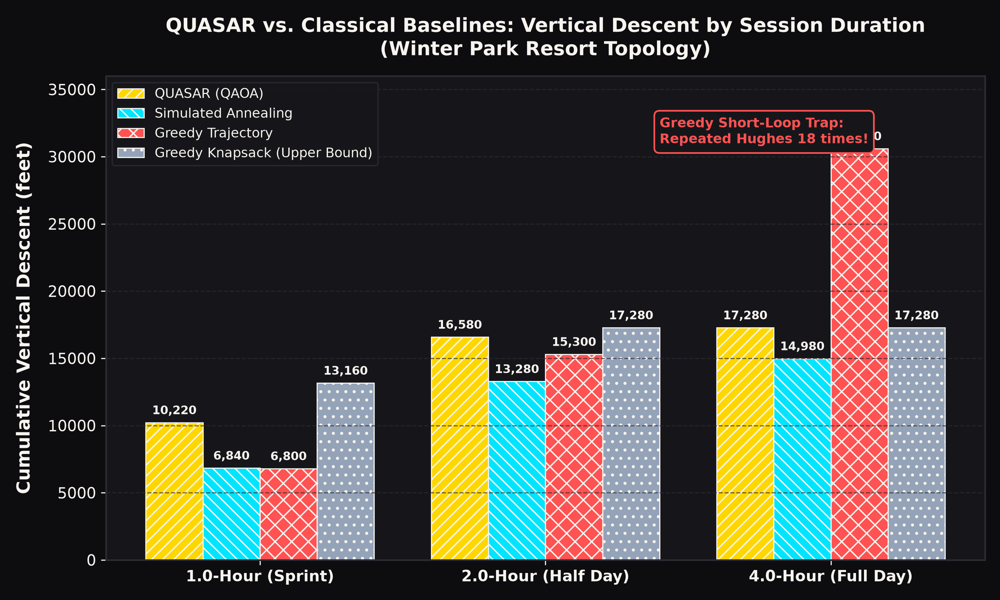
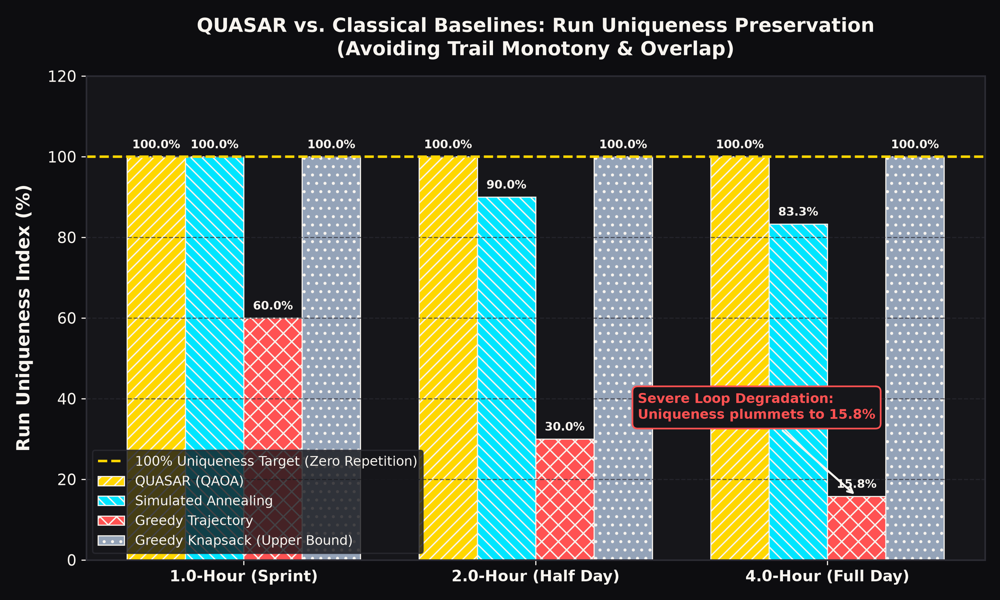

Quantitative Unique Alpine Ski Altitude Routing: Hybrid Continuous-Time Quantum Walk (CTQW) and QAOA route optimization across Winter Park Resort, Colorado.
Interactive geospatial map mapping 13 decision nodes, GPS coordinates, real elevation contours, and 22 lifts/trails across the Seven Territories of Winter Park Resort. Includes screen-reader accessible data tables.
Full comparative benchmark dashboard analyzing QUASAR (QAOA) against Simulated Annealing and Classical Greedy Trajectory across 1h, 2h, and 4h sessions with dual hatch pattern colorblind encoding.

